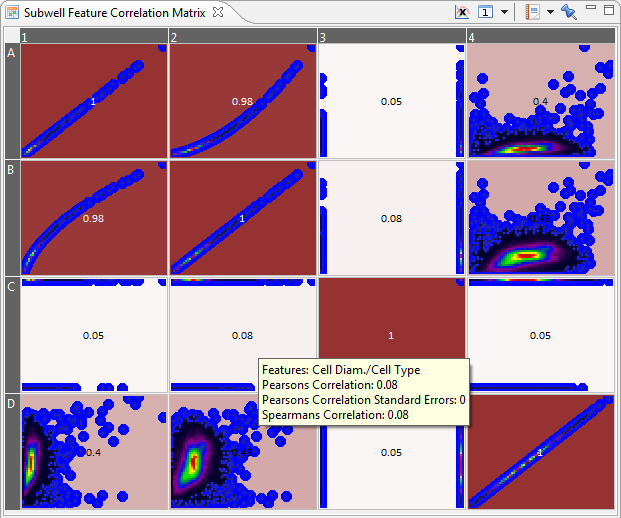
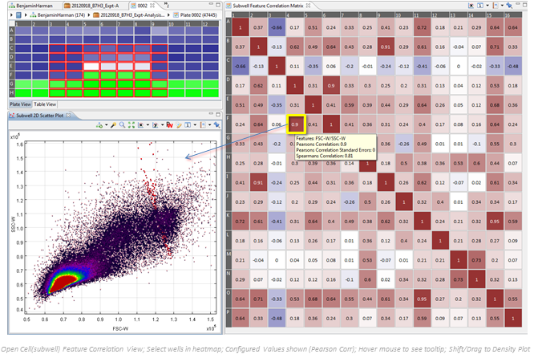

The Feature Correlation matrix shows exactly what the title suggests. You can select different features which will be added in the x and y axes of the matrix and will show correlating data according to the crossing features.
This matrix is used to show certain correlations between the features of cells.

If a subwell chart is open, clicking on a cell will show the individual scatter plot in that Chart.
For example:

You can add or remove features for the correlation matrix by clicking on the x-axis icon.